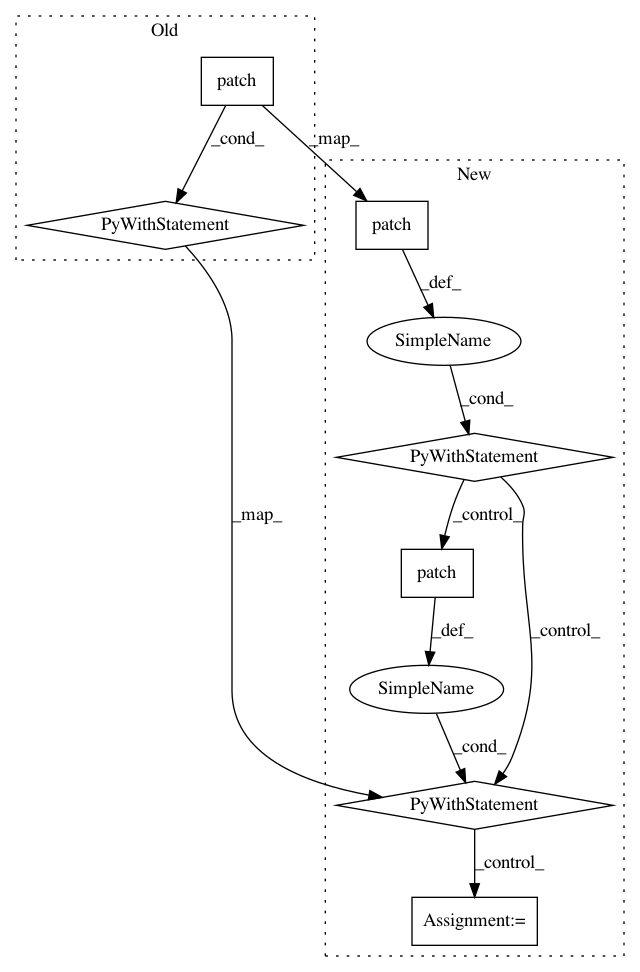

8aac626ed379e0c45772ec463c8238990896b9e9,tests/test_experiment_groups/test_views.py,TestStopExperimentGroupViewV1,test_stop_all,#TestStopExperimentGroupViewV1#,566
Before Change
assert mock_fct.call_count == 1
// Execute the function
with patch("scheduler.experiment_scheduler.stop_experiment") as _: // noqa
resp = self.auth_client.post(self.url, data)
assert resp.status_code == status.HTTP_200_OK
assert self.object.stopped_experiments.count() == 3
def test_stop_pending(self):
After Change
assert mock_fct.call_count == 1
// Execute the function
with patch("scheduler.experiment_scheduler.stop_experiment") as stop_mock_fct: // noqa
with patch("logs_handlers.collectors."
"logs_collect_experiment_jobs") as logs_collector_mock_fct:
resp = self.auth_client.post(self.url, data)
assert resp.status_code == status.HTTP_200_OK
assert self.object.stopped_experiments.count() == 3
// 3 and only 1 running the other will have a stopped directly
assert stop_mock_fct.call_count == 1
In pattern: SUPERPATTERN
Frequency: 3
Non-data size: 7
Instances
Project Name: polyaxon/polyaxon
Commit Name: 8aac626ed379e0c45772ec463c8238990896b9e9
Time: 2018-12-11
Author: mouradmourafiq@gmail.com
File Name: tests/test_experiment_groups/test_views.py
Class Name: TestStopExperimentGroupViewV1
Method Name: test_stop_all
Project Name: home-assistant/home-assistant
Commit Name: 4dda842b16646b9f3863366a279d4dc65f262ece
Time: 2018-01-09
Author: andrea.campi@gmail.com
File Name: tests/components/light/test_hue.py
Class Name: TestSetup
Method Name: test_update_lights_with_no_lights
Project Name: home-assistant/home-assistant
Commit Name: a019f076c036e1405d7a0d605c7c182bea4015da
Time: 2021-03-25
Author: 7310260+G-Two@users.noreply.github.com
File Name: tests/components/subaru/test_config_flow.py
Class Name:
Method Name: test_pin_form_success